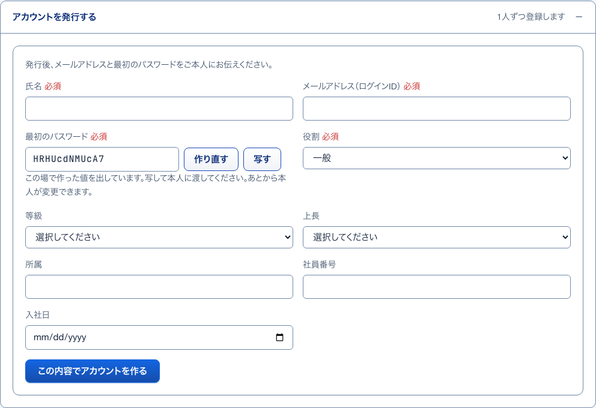
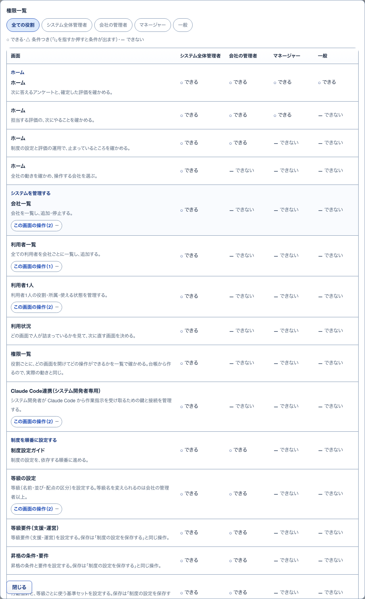
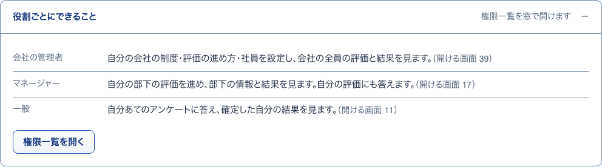
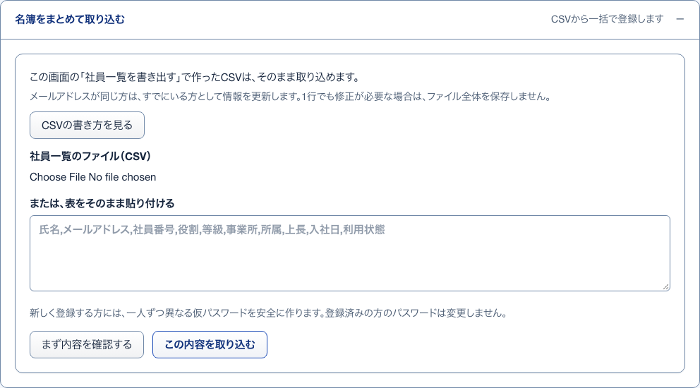

1アカウントを発行する開いて見る
S24 社員 ・ 押すもの: 「アカウントを発行する」

中に出るもの
- 氏名
- メールアドレス（ログインID）
- 最初のパスワード（その場で作った値）
- 役割（初期は一般）
- 等級・上長・所属・社員番号・入社日
中で押せるもの
- 作り直す: パスワードの値を作り直す
- 写す: パスワードを写す
- この内容でアカウントを作る: 1人を足して名簿に加える
2発行した控え押したあとに出る
S24 社員 ・ 押すもの: 「この内容でアカウントを作る」 ・ 閉じる: 控えを隠す ・ 押すと保存や送信が起きるので、写真は載せていない
中に出るもの
- 作った最初のパスワード（一度だけ）
- 隠したあとも一覧の行の「仮パスワードの控えを見る」から開き直せる
中で押せるもの
- 仮パスワードの控えを見る: 控えを出す
- 控えを隠す: 控えを隠す
- 次の入力を始める: 欄を空に戻す
3行の仮パスワード控え押したあとに出る
S24 社員 ・ 押すもの: 「仮パスワードの控えを見る」 ・ 閉じる: 隠す
中に出るもの
- 仮パスワード
- いつ発行し、いつまで開けるか
中で押せるもの
- 写す: 仮パスワードを写す（「写しました」と出る）
- 隠す: 控えを閉じる
5権限一覧小窓
S24 社員 ・ 押すもの: 「権限一覧を開く」 ・ 閉じる: 閉じる

中に出るもの
- 役割のタブ（全ての役割・システム全体管理者・会社の管理者・マネージャー・一般）
- 凡例（○できる・△条件つき・—できない）
- 画面ごとの表
中で押せるもの
- 役割のタブ: 表をその役割に絞る
- この画面の操作（N）: その画面の操作の一覧を開閉する
- i: 条件つきの中身を出す
- 閉じる: 小窓を閉じる
4役割ごとにできること開いて見る
S24 社員 ・ 押すもの: 「役割ごとにできること」

中に出るもの
- 会社の管理者・マネージャー・一般ごとの要約
- 開ける画面の数
中で押せるもの
- 権限一覧を開く: 小窓「権限一覧」を開く
6名簿をまとめて取り込む開いて見る
S24 社員 ・ 押すもの: 「名簿をまとめて取り込む」

中に出るもの
- 社員一覧のファイル（CSV）
- または、表をそのまま貼り付ける
中で押せるもの
- CSVの書き方を見る: 小窓「CSVの書き方」を開く
- まず内容を確認する: 保存せずに全行を確かめる
- この内容を取り込む: 全行が正しいときだけ保存する